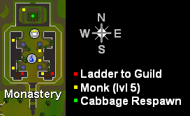
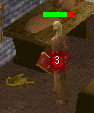
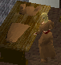

Prayer Guild
Requirements: 31 or more prayer.Location: The prayer guild is located west of Edgeville and north of the Body altar and east of Ice Mountain.
If you don't have 31 prayer, Abbot Langley will tell you, you can't go up there. If you do have 31 prayer he will ask you to join the monastery. Say yes and you will be allowed to enter. But he will still heal you like all the monks even if you cant enter.

Here's the map of the first floor of the monastery:

Once you are allowed in you can access the second level; here's a map:

The first thing when you notice when you go upstairs is the Kharid scorpion wandering on the floor; it is used in the scorpion capture member's quest. Be careful not to touch the scorpion it will cause 3 points of damage as seen below.

The second thing you will notice is the monks robe respawn on the table this is the only place in Runescape were they respawn. They give a helpfull prayer bonus, being 11.

The most useful thing in the guild is the altar. It has a special ability to raise your prayer level temporarily by 2. So you would have 33/31 after praying, rather then the normal 31/31(note this will not let you use new prayers, so if you have 43/41 you still can't use protect from melee). This is one of two altars that do this, the other one being the nature altar which requires the Nature Spirit to do.

Finally there is brother Jered:

And that concludes the monastery guide; don't forget the free healings the monk give!
This Guild guide was written by gondomwinges. Thanks to Slow Cheetah, spazn8r2, Rodsay, the_real_gte, Demonichell, goatluver500, Dravan, Thunderdog, mith_driger, Darkwiz, Hell_Assassin, and Pokemama for corrections.
This Guild guide was entered into the database on Tue, Mar 16, 2004, at 02:05:43 PM by DRAVAN and was last updated on Wed, Sep 28, 2005, at 11:08:41 AM by Fireball0236.